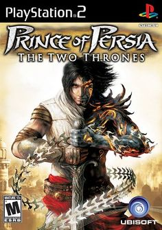
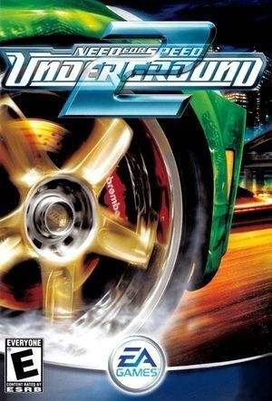
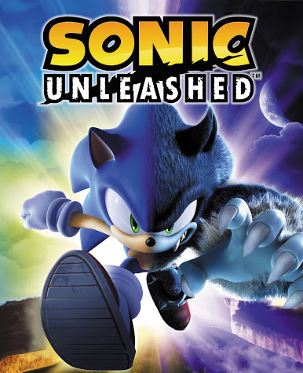
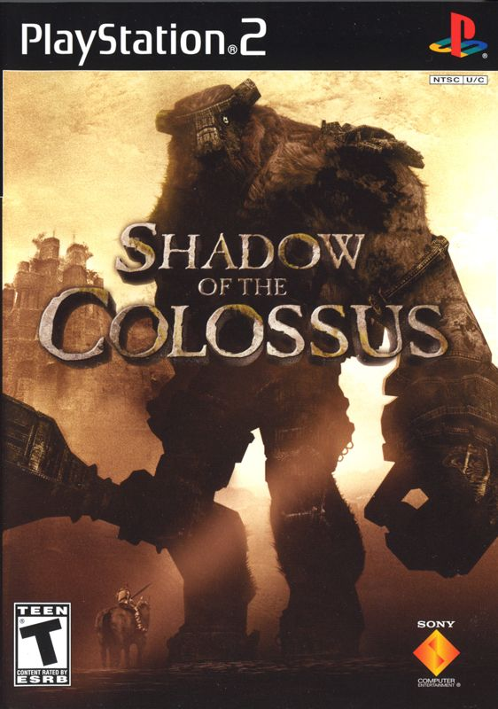
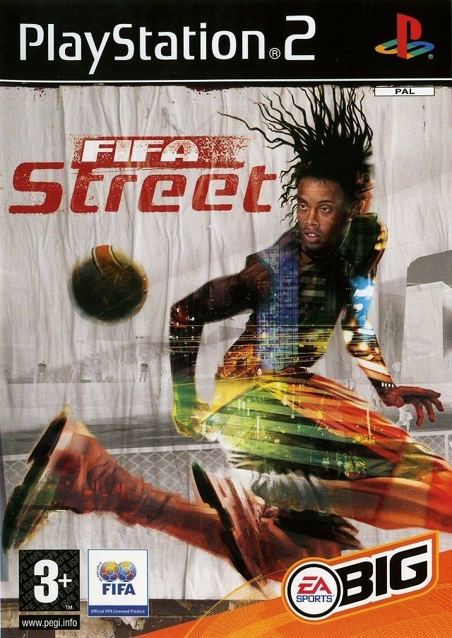
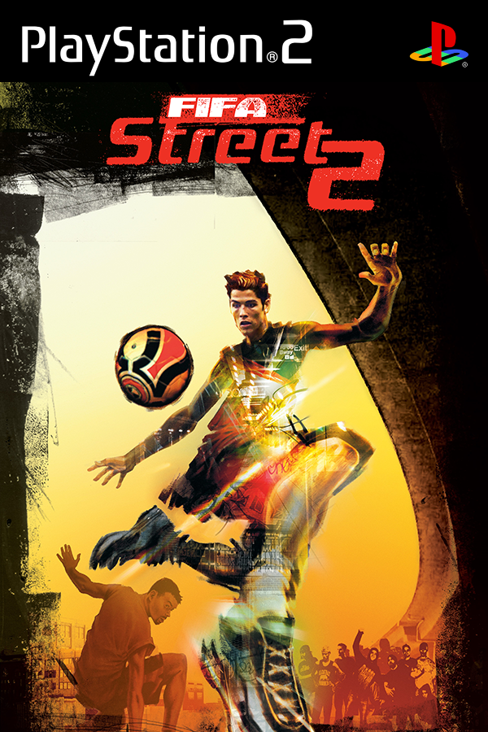
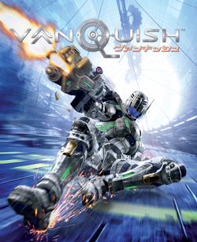
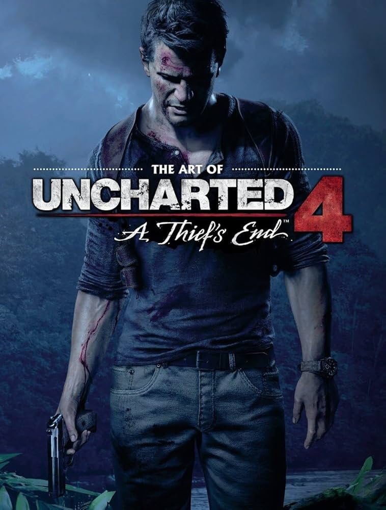
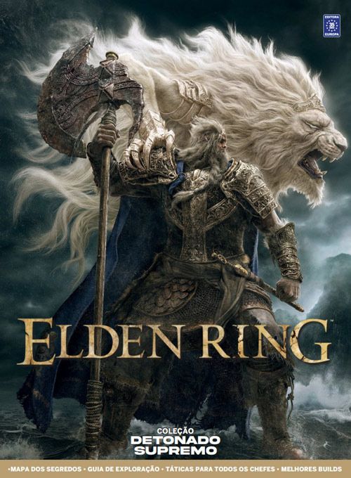

-

-

Prince Of Persia:The Two Thones
Mergulhe em uma história dramática: vivencie uma narrativa de profundidade inigualável enquanto luta para abrir caminho em uma história cheia de adrenalina, tensão e descobertas. Manipule o tempo para surpreender os inimigos: execute ataques poderosos contra exércitos inteiros ao desacelerar ou retroceder o tempo, ou surpreenda-os ao usar alguns dos novos poderes das Areias do Tempo. Desfrute de uma combinação excepcional de jogabilidade: fiel à franquia Prince of Persia®, o jogo oferece uma variedade de combates de ação, agilidade e enigmas baseados em histórias — todos combinados com maestria em uma rica experiência de jogo.
-

Need for Speed Undergroud 2
Lançado lá em 2004 para PlayStation 2, Xbox, PC e GameCube, Need For Speed Underground 2 é um dos títulos mais emblemáticos não só da franquia da EA, mas de todos os jogos de corrida em contexto geral. Que atire a primeira pedra quem não sente aquela nostalgia boa quando toca Riders on the Storm!
-

Burnout Revenge
Burnout Revenge é um videogame de corrida desenvolvido pela Criterion Games e publicado pela Electronic Arts para PlayStation 2 , Xbox e Xbox 360 .Semelhante ao seu antecessor Burnout 3: Takedown , Revenge se concentra em uma mistura de corrida no meio do tráfego da hora do rush e combate veicular; os jogadores usam os próprios carros como armas. A vingança também se expande no lado do combate de sua jogabilidade com novos recursos, como "verificação de tráfego" (atropelar o tráfego na mesma direção), quedas verticais (pousar em um carro rival após o carro do jogador dar um salto), um novo tipo de jogo ( Traffic Attack) e mudanças significativas na jogabilidade do modo Crash (um tipo de jogo em que os jogadores tentam causar uma colisão tão grande quanto possível). Um sucessor intitulado Burnout Paradise , foi lançado para PlayStation 3 e Xbox 360.em 22 de janeiro de 2008. O jogo também se tornou compatível com versões anteriores do Xbox One em 8 de maio de 2018 e do Xbox Series X/S no lançamento do console
-

Sonic Unleshead
Sonic Unleashed conhecido como (Sonic World Adventure no Japão) é um jogo eletrônico da desenvolvedora de jogos Sega. O jogo foi lançado para Nintendo Wii, PS2, PS3 e Xbox 360, contando com uma versão para telefone móvel em 28 de Novembro de 2008.No jogo, há fases diurnas e noturnas, que contam com jogabilidades completamente diferentes. Nos momentos diurnos, as fases mantêm as características originais da série Sonic, com progressão rápida por cenários diversificados. Nos estágios noturnos, Sonic adquire aparência de uma espécie de lobo-ouriço (em inglês, chamado de Werehog) e perde sua velocidade característica. Em compensação, ganha grande força e braços que se esticam para alcançar lugares de difícil acesso além de realizar golpes em seqüencia (combos). Nessas fases, o jogo se desenvolve em um estilo de luta e plataforma
-

Shadow of Colossus
Shadow of the Colossus, lançado no Japão como Wander and the Colossus (ワンダと巨像, Wanda to Kyozō),[1] é um jogo eletrônico de ação-aventura desenvolvido pela SCE Japan Studio e publicado pela Sony Computer Entertainment para o PlayStation 2. O jogo foi lançado na América do Norte e no Japão em outubro de 2005 e em territórios PAL em fevereiro de 2006.O enredo do jogo se concentra em um jovem chamado Wander, que deve viajar por uma terra proibida com o objetivo de derrotar dezesseis criaturas conhecidas simplesmente como "Colossi",[5] para restaurar a vida de uma garota chamada Mono. O jogo é incomum dentro do gênero de ação-aventura já que não existem cidades e calabouços para serem explorados.
-

Fifa Street
O FIFA Street é uma franquia lançada em 2005, pela Electronic Arts, para Playstation, que consistia em um jogo arcade, tridimensional, com visão isométrica, câmera superior lateral e dinâmica de jogo horizontal. A grande diferença deste simulador era que ele era focado no drible, no jogo dinâmico praticado nas ruas ou nas quadras de futsal. Apesar do gol ainda ser um fator decisivo para a definição do placar, utilizar truques especiais era essencial para vencer os adversários e também liberar a habilidade especial. Ao realizar uma determinada pontuação em dribles, uma barra na parte superior do ecrã enchia até aparecer a palavra “Gamebreaker”, então seu jogador tornava-se capaz de realizar uma finalização muito difícil de ser defendida pelo goleiro adversário
-

Fifa Street 2
FIFA Street 2 é um jogo de futebol de rua em que o jogador assume o controle de times nacionais e internacionais em partidas onde o objetivo é ganhar, marcando uma quantidade definida de gols ou pontos por meio de truques ou dentro de um limite de tempo. O jogo possuí um modo carreira chamado "Rules the Streets", onde o jogador cria um personagem, e compete em torneios de rua ao redor do mundo, melhorando sua classificação e suas habilidades.Na medida que o jogador melhora, ele pode comandar seu próprio time de futebol de rua que eventualmente pode se tornar internacional. O jogador pode personalizar seu personagem no jogo, com roupas e acessórios e tudo isso pode ser comprado com "Skill Bills" adquirido durante as partidas de futebol de rua no jogo.
-

Red Dead Redempition
Quando a família do ex-fora da lei John Marston é ameaçada por agentes federais, ele é obrigado a caçar a gangue de criminosos formada pelos seus antigos amigos. Explore os eventos subsequentes ao blockbuster de 2018 Red Dead Redemption 2 na aclamada história da jornada de John Marston, na qual ele luta para enterrar o próprio passado de violência a cada inimigo derrotado. Red Dead Redemption abrange três territórios distintos no Sudoeste americano e no México. Nova Austin é o último posto avançado da fronteira americana e abriga algumas cidades e fortes. Ao sul da fronteira fica a província mexicana de Nuevo Paraíso, onde uma guerra civil está prestes a estourar. O território mais ao norte de West Elizabeth é onde fica a cidade de Blackwater, que está se modernizando rapidamente.
-

Red Dead Redempition 2
Estados Unidos, 1899. O fim da era do velho oeste se aproxima, e os xerifes caçam as últimas gangues fora da lei. Quem não se rende ou sucumbe, acaba morto.Depois de tudo dar errado em um roubo na cidade de Blackwater, no faroeste, Arthur Morgan e a gangue Van der Linde são obrigados a fugir. Com agentes federais e os melhores caçadores de recompensas no seu encalço, a gangue terá que roubar, assaltar e lutar para sobreviver no implacável coração dos Estados Unidos.Conforme as divergências internas se acirram e ameaçam separar a gangue, Arthur precisa fazer uma escolha entre seus ideais e sua lealdade com o grupo de fora da lei que o criou. Desenvolvido pelos criadores de Grand Theft Auto V e Red Dead Redemption, Red Dead Redemption 2 é uma história épica da vida no início da era moderna dos Estados Unidos.
-

Vanquish
Vanquish é um jogo de ação de tiros jogado na terceira pessoa produzido pela Platinum Games e publicado pela Sega para Xbox 360 ; PlayStation 3 e PC. Começou a ser produzido em 2007 e lançado em Outubro de 2010.O jogo não foi criado pela equipa responsável por Resident Evil 4, somente o diretor do jogo Shinji Mikami participou do projeto.Vanquish notabilizou-se por introduzir várias inovações ao género de tiro em 3D, incluindo um estilo rápido de jogabilidade reminiscente dos shooters em 2D,[5] elementos de beat em up[6] e um original impulso-deslizante mecânico.
-

God of War 3 Originalmente desenvolvido pelo Santa Monica Studio da Sony Computer Entertainment, exclusivamente para o sistema PLAYSTATION®3, God of War® III foi remasterizado para o sistema PLAYSTATION®4, com compatibilidade de 1080p em 60fps para suas partidas. God of War III Remasterizado dá vida a batalhas épicas com gráficos impressionantes e uma trama elaborada que coloca Kratos no centro do massacre e da destruição, em sua busca pela vingança contra os Deuses que o traíram. Ambientado no domínio da brutal mitologia grega, God of War III Remasterizado é o jogo para um jogador aclamado pela crítica que permite ao jogador assumir o papel do destemido ex-guerreiro espartano Kratos, em sua ascensão das profundezas obscuras de Hades para escalar as altitudes do Monte Olimpo e buscar sua vingança sangrenta contra aqueles que o traíram. Munido de duas espadas com correntes e um conjunto de novas armas e mágicas, Kratos deverá enfrentar as criaturas mais mortais da mitologia e resolver enigmas complexos em sua busca implacável para destruir o Olimpo
-

Uncharted 4
Três anos depois dos acontecimentos de UNCHARTED 3: Drake's Deception, tudo indica que Nathan Drake deixou para trás o mundo dos caçadores de tesouros. Porém, não demora muito para o destino bater à porta dele: é seu irmão, Sam, que reaparece pedindo ajuda para salvar a própria vida e oferece uma aventura que Drake não pode recusar. Em busca do tesouro do capitão Henry Avery, há muito tempo perdido, Sam e Drake partem à procura de Libertalia, a utopia pirata escondida nas selvas de Madagáscar. UNCHARTED 4: A Thief's End leva os jogadores numa jornada pelo planeta, cruzando ilhas selvagens, cidades remotas e picos cobertos de neve, tudo em busca do tesouro de Avery.
-

Lies of P
Esse jogo soulslike se inspira em uma história inesperada: as aventuras do Pinóquio. Nessa versão sombria do conto clássico de Carlo Collodi, Pinóqui está procurando pelo misterioso Sr. Gepeto. Sua jornada o leva até Krat, uma cidade inspirada na Belle Époque e cujos habitantes estão perdidos em meio à insanidade e marionetes assassinas. Pinóquio deve lutar para sobreviver usando uma grande variedade de armas e Legion Arms com habilidades especiais. Ele também encontrará personagens não hostis, mas será necessário mentir para que ele realize seu sonho de se tornar humano.
-

Elden Ring
Elden Ring se passa em um universo fantasioso, em que tudo é “abençoado” pela Graça, uma luz divina provida pela Térvore, uma árvore brilhante e imensa, e protegida pelo misterioso Anel Prístino. Em uma guerra entre semideuses, o anel foi quebrado, o que afetou a Graça e transformou os habitantes e as criaturas da região em seres Sem Luz, os Maculados. Alguns deles, no entanto, ainda conseguem ver a luz divina, o que é o caso do personagem controlado pelo jogador. Assim, o objetivo é encontrar os pedaços perdidos do Anel Prístino, com a Graça como guia. Mas, é claro, não é tão fácil quanto parece. Este é apenas o pontapé inicial para uma jornada desafiadora em um universo repleto de seres bizarros, lagos venosos, vilarejos amaldiçoados, pântanos sombrios e muitos segredos.